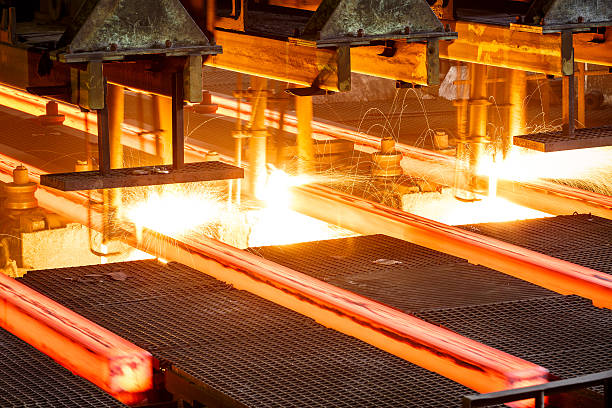

Переработка металлолома
Мы занимаемся переработкой маталлолома и его повторным использование в производстве
Подробнее
О компании
Мы специализируемся на переработке металлолома, закупая отходы у предпринимателей и повторно используя их в производстве. Наша миссия — способствовать устойчивому развитию через ответственную переработку металлов.

Наши услуги по переработке маталлолома
Узнайте, как мы перерабатываем металлолом, и какие экологические и экономические преимущества это даёт нашим клиентам. Результаты говорят сами за себя!
- Приём и переработка металлолома
- Принимаем различные виды металлолома и перерабатываем его в соответствии с высокими стандартами качества. Обеспечиваем эффективное использование вторичного сырья в производстве.
- Сотрудничество с предпринимателями
- Предлагаем выгодные условия сотрудничества для предпринимателей, желающих избавиться от металлолома. Мы закупаем отходы и перерабатываем их, обеспечивая экологичное решение для вашего бизнеса.
- Экологические преимущества
- Снижаем негативное воздействие на окружающую среду за счёт переработки металлолома. Повторное использование материалов способствует экономии природных ресурсов и снижению объёмов отходов.